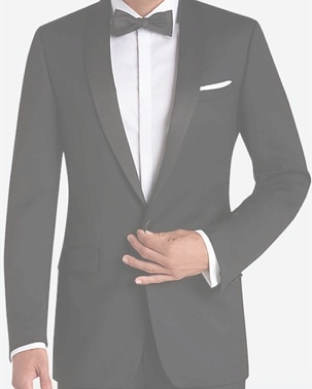
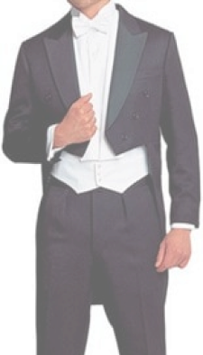

Какие виды мужских костюмов существуют?
Костюм — неотъемлемый атрибут успешного мужчины. Но даже если вы можете позволить себе прийти на работу в джинсах, все равно позаботьтесь о том, чтобы в вашем гардеробе был хотя бы один качественный костюм. Сегодня мы расскажем, какие виды мужских костюмов существуют, и как выбрать подходящий.
Модели мужских костюмов
1. Однобортный
Один из самых популярных и удобных видов пиджаков, которому отдают предпочтение 80% мужчин.
Отличительные особенности:имеет ряд пуговиц на одном борту и петли на другом.
Отличительные особенности:имеет ряд пуговиц на одном борту и петли на другом.
- универсальная модель, подходящая практически всем;
- удобно расстегивать и застегивать
2. Двубортный
Менее распространенная модель, выглядит более строго. На официальные мероприятия рекомендуется надевать именно такой костюм, при этом он должен быть застегнут на все пуговицы.
Отличительные особенности: имеет два ряда пуговиц, а полы достаточно далеко заходят друг на друга.
Отличительные особенности: имеет два ряда пуговиц, а полы достаточно далеко заходят друг на друга.
- подойдет худощавым мужчинам высокого роста
3. Костюм-тройка
Классический мужской костюм, появившийся в начале 20-го века и ставший воплощением подлинного вкуса.
Отличительные особенности: состоит из брюк, однобортного пиджака и жилета, сшитых из одной ткани.
Отличительные особенности: состоит из брюк, однобортного пиджака и жилета, сшитых из одной ткани.
- согласно этикету, в костюме-тройке позволительно снять пиджак, не спросив об этом разрешения
Стили мужских костюмов
1. Формальный
Для особых случаев и протокольных мероприятий с обязательным соблюдением дресс-кода. Наиболее известные виды – смокинг и фрак.
Смокинг
Смокинг — так называемый «клубный» пиджак (раньше его носили на неформальные дружеские встречи или беседы с партнерами по бизнесу). Сегодня его надевают на протокольные мероприятия после пяти вечера, согласно дресс-коду «black tie».
Фрак
Фрак — парадный вечерний костюм, который обычно надевают на торжественные и официальные мероприятия по строгому протоколу (согласно дресс-коду «white tie»).


2. Неформальный
Среди неформальных костюмов выделяют:
Casual
Подходит для прогулок, встреч с друзьями, неформального общения, семейных вечеринок и неофициальных мероприятий выходного дня. Носится без галстука и с расстегнутым воротником сорочки. Пиджак и брюки могут быть выполнены из разных тканей.
Fashion item
Так называемые костюмы «на один сезон». Они шьются из нетрадиционных для мужских костюмов тканей (например, хлопка, льна, шелка), им свойственна некоторая небрежность, иногда они могут выглядеть слегка помятыми. Подходят для вечеринок и на каждый день.
Мужские костюмы по пошиву

Английский
Костюмы английского пошива – это сочетание вечной британской классики, элегантности и традиций. В равной степени используются одно и двубортные приталенные пиджаки с шлицами на спинной части (специальные вертикальные отверстия). Идеальный вариант для мужчин нормального телосложения, то есть не худых и не полных.
Американский
Пик популярности американских костюмов наблюдался в 20-х годах прошлого столетия. Изначально модели выглядели не очень стильно, отличались мешковатостью и свободным кроем, в первую очередь, рассчитанные на комфорт и практичность для мужчин полной комплекции.
Со временем ситуация изменилась, новые типы американских костюмов вполне элегантны и подходят под любую фигуру. Стандартная модель включает однобортный укороченный пиджак на 2–3 пуговицах, плечевые вкладки часто отсутствуют, форма пиджака слабо заужена в нижней части.
Со временем ситуация изменилась, новые типы американских костюмов вполне элегантны и подходят под любую фигуру. Стандартная модель включает однобортный укороченный пиджак на 2–3 пуговицах, плечевые вкладки часто отсутствуют, форма пиджака слабо заужена в нижней части.
Итальянский
Итальянские костюмы смотрятся наиболее современно и стильно. Отличаются от английского и американского вариантов высоким расположением пуговиц, приподнятыми плечевыми элементами, более зауженными брюками и общей элегантной формой, максимально прилегающей к фигуре.
Самая распространенная модель – это однобортный пиджак с 3 пуговицами и шлицами. При пошиве итальянских костюмов используются легкие материалы самой высшей пробы. Особенно качественные модели предлагают такие известные бренды, как Brioni, Zegna и Canali. Больше всего подходят высоким и стройным мужчинам.
Самая распространенная модель – это однобортный пиджак с 3 пуговицами и шлицами. При пошиве итальянских костюмов используются легкие материалы самой высшей пробы. Особенно качественные модели предлагают такие известные бренды, как Brioni, Zegna и Canali. Больше всего подходят высоким и стройным мужчинам.
Проверьте как вы усвоили статью!